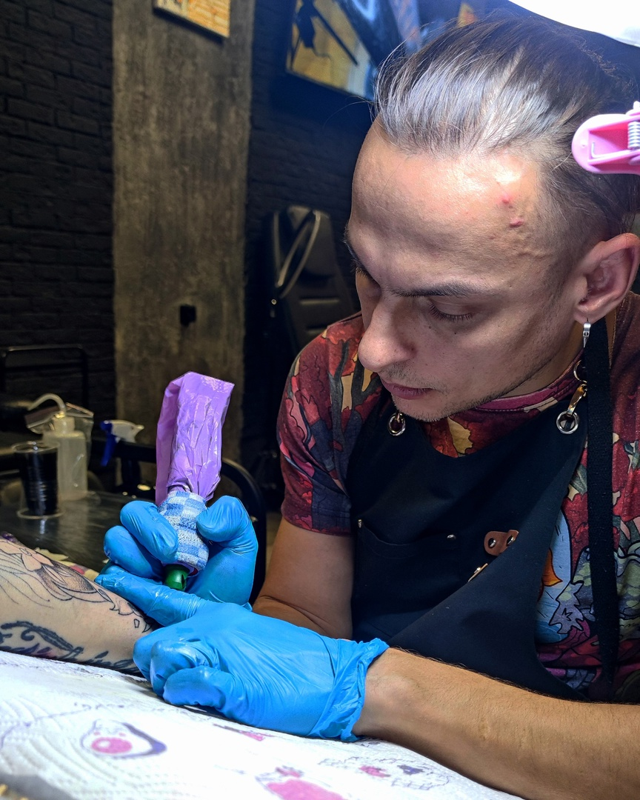
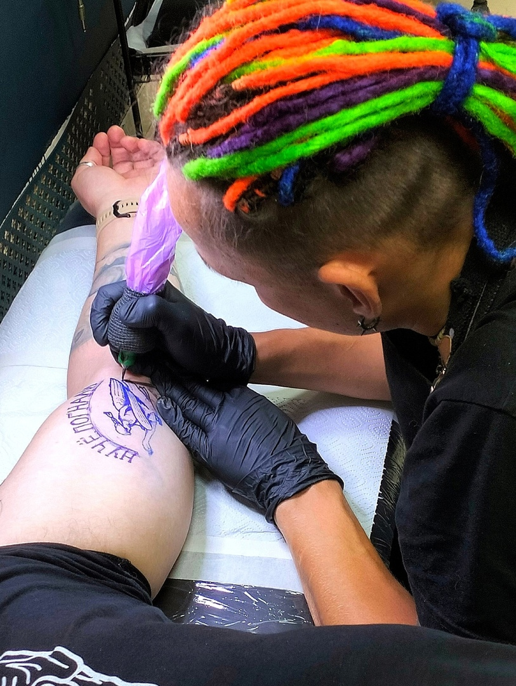

Андрей Ворон. тату-мастер из Самары до курса работал наемным сотрудником с зарплатой чуть больше 60 тысяч рублей в месяц. Занимался татуировкой ради опыта, практически не зарабатывая на этом. После прохождения курса вышел на доход 100-150 тысяч рублей в месяц при 10-15 клиентах.
— Расскажешь, что было до курса, какой средний доход был в месяц? Сколько клиентов? Почему решил пойти учиться?
— До курса была наёмная работа. Хорошая работа, я был начальником IT отдела в муниципальном предприятии с зарплатой чуть больше 60 тысяч на момент 2019 года.
Впоследствии пришло выгорание и желание что-то изменить в своей жизни.
Я занимался татуировкой, так сказать, факультативно. Не за деньги, а за опыт. Брал деньги чисто за расходку, так что ничерта не зарабатывал.
Мог быть спокойно один человек в месяц, я не парился. Не было записей – тренировался на свиной шкуре, поскольку основная работа, так или иначе, сносно обеспечивала мои потребности.
Параллельно моя наставница заставляла меня вести вк и инсту.
Однако, адекватная оценка своего уровня вкупе с синдромом самозванца не давали мне этого делать.
Я сгорал со стыда каждый раз, когда выкладывал очередную работу.
А наставница требовала постоянно писать какие-нибудь посты и делать какие-то сторисы.
Вся эта деятельность вызывала у меня настолько сильное отторжение, что это привело к быстрому выгоранию.
Однажды я просто ушёл из студии, и запер оборудование в ящик, забыв про него на долгое время. Год или около того.
Тем более, за этот год в моей жизни произошли некоторые серьёзные изменения, требовавшие весьма серьёзных ресурсов, так что на тату просто не было времени.
Через год же, когда всё устаканилось, я понял, что безумно скучаю по ремеслу, и не смогу себе простить, если продолжу на него забивать.
Я снова расчехлил оборудку, и уже в другой студии, без давления сверху, в комфортном для себя темпе, начал вновь делать искусство. Ну, партаки, конечно, на тот момент.
Брал в районе 2-3 тысяч за один сеанс. Опять же, основная прибыль шла с наёмной работы. В месяц было 4-8 человек. Поскольку трудился я в графике 5 дней в офисе, 2 дня в студии.

— Какие сложности были во время обучения на нашем курсе? Насколько сложно было учиться? За сколько прошел обучение?
— Не было сложностей. Прошёл за 3 месяца, если мне память не изменяет.
— Какие сейчас действия делаешь для привлечения клиентов? Как часто пишешь посты? Запускаешь ли рекламу?
— Посты пишу, вообще всегда руководствуясь принципом "можешь не писать – не пиши". Если пишу по необходимости, без идеи, то лютая хрень получается.
Могу 2-3 раза в неделю что-то выкладывать, а могу раз в месяц, по настроению.
Рекламу запускаю сейчас не очень часто, на самом деле. Обычно хватает раз в сезон, чтобы забить себе запись. Я делаю, в основном, большие татухи, и люди, которые записываются ко мне, ходят долго и постоянно.
Да и сарафанка уже потихоньку начинает работать

— Можешь поделиться, как изменилась жизнь, когда увеличился доход? Может что-то купил себе? Съездил в путешествие? Что-то смог сделать, чего раньше не мог позволить себе?)
— Пока ипотеку закрываю. В целом, идём с опережением на 2 года. Это сейчас первоочередная задача.
Как с ней расправлюсь, так и об остальных целях подумать можно будет) Не хочу, чтоб она меня таготила)
— Все, остался только вопрос, сколько сейчас зарабатываешь? Сколько в среднем в месяц? Сколько клиентов? А вот примерно сколько за год было прошедший заработано?
— От 100 до 150 тысяч, если по 10-15 человек в месяц брать. А за прошлый год не скажу. Никак не могу выйти из режима вечных каникул и начать вести учёт)
— Андрей, спасибо тебе за ответы. Было очень приятно с тобой пообщаться! Удачи!